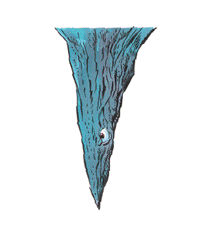

Piercer

CLIMATE/TERRAIN:
| Any subterranean
|
FREQUENCY:
| Uncommon
|
ORGANIZATION:
| Colony
|
ACTIVITY CYCLE:
| Any
|
DIET:
| Carnivore
|
INTELLIGENCE:
| Non- (0)
|
TREASURE:
| Nil
|
ALIGNMENT:
| Neutral
|
NO. APPEARING:
| 3-18 (3d6)
|
ARMOR CLASS:
| 3
|
MOVEMENT:
| 1
|
HIT DICE:
| 1-4
|
THAC0:
| 19 (1-2 HD),
|
| 17 (3-4 HD)
|
NO. OF ATTACKS:
| 1
|
DAMAGE/ATTACK:
| 1-6 (1 HD),
|
| 2-12 (2 HD),
|
| 3-18 (3 HD),
|
| 4-24 (4 HD)
|
SPECIAL ATTACKS:
| Surprise
|
SPECIAL DEFENSES:
| Nil
|
MAGIC RESISTANCE:
| Nil
|
SIZE:
| T-M (1-6' tall)
|
MORALE:
| Average (8-10)
|
XP VALUE:
|
|
1 HD
| 35
|
2 HD
| 65
|
3 HD
| 120
|
4 HD
| 420
|
Piercers resemble stalactites found on cave roofs. They are actually a species
of gastropods that, without their shells, resemble slugs with long tails. A
piercer climbs onto the ceiling of a cavern and waits patiently; when it detects
prey beneath it, it drops from the ceiling and impales the victim with the
sharp end of its shell.
Piercers look like limestone growths on the ceiling of a cavern, just like
ordinary stalactites. They come in the following sizes: one foot long (1 Hit Die),
three feet long (2 Hit Dice), four and one-half feet long (3 Hit Dice), and
six feet long (4 Hit Dice). Piercers can be identified on very close inspection
by a pair of tiny eyestalks that curl along the side of the stalactite.
Combat: Piercers have only one chance to hit; if an attack fails to score a kill, the
piercer cannot attack again until it slowly scales a wall to resume its
position. Piercers can hear noises and detect heat sources in a 120-yard radius; these
heat sources include humans. If the noise and light are stationary for many
minutes at a time, piercers will slowly edge into attack position over the source
of the stimulus. Piercers are virtually indistinguishable from natural
phenomena. A group of characters has a -7 modifier on its surprise roll against a
piercer (this guarantees that the group will be surprised unless it has some
positive modifiers).
A piercer, after it has fallen, is slow and fairly easily slain. Its soft
underbelly has one defense mechanism; when exposed to air it covers itself in a
corrosive acid which inflicts 1 point of damage on contact with flesh. This is
usually enough to dissuade natural predators from disturbing it.
Habitat/Society: While piercers are nonintelligent, the piercers in a colony are aware of each
other. They often fall simultaneously, to feed on those killed by other
piercers (which makes the area suddenly very dangerous).
Piercers dwell in caverns, where they live in groups of about 10 members. They
prefer to hang over high traffic areas, so they will usually be found near
cave entrances. Aside from mating, the piercers are not social creatures. There
are rumored to be great caverns deep underground that contain colonies of
hundreds of piercers. Piercers are not attracted to treasure, only to food.
Ecology: The piercer is a mollusk, hatched from a hen-sized egg which the parent lays
in clutches of six to eight in isolated areas of the cavern. When they hatch,
the young appear to be slugs feeding on fungi. After several months, they climb
the cavern walls, secrete a chemical that hardens into the familiar stalactite
shape, and then wait for prey to come.
A piercer has a lifespan of four years and grows one Hit Die per year. In any
group of piercers, the number of creatures with one, two, three, and four Hit
Dice will be nearly evenly divided (e.g., in a group of 12 piercers, there will
be three one Hit Die piercers, three with two Hit Dice, three with three Hit
Dice, and three with four Hit Dice).
A piercer can go without food for months. It stores food in a second stomach
that can preserve food for long periods of time; some alchemists seek out
piercers to extract a substance from this organ and refine it for human use, as it
can keep foodstuffs and precious ingredients fresh for weeks. Piercers also store
large supplies of water, extracted from their victims. Piercers can maintain
this water supply for months.
The taste of a piercer is said to resemble that of a snail, but with a bitter
aftertaste. Their eggs and offspring are not traded on the open market.
Index